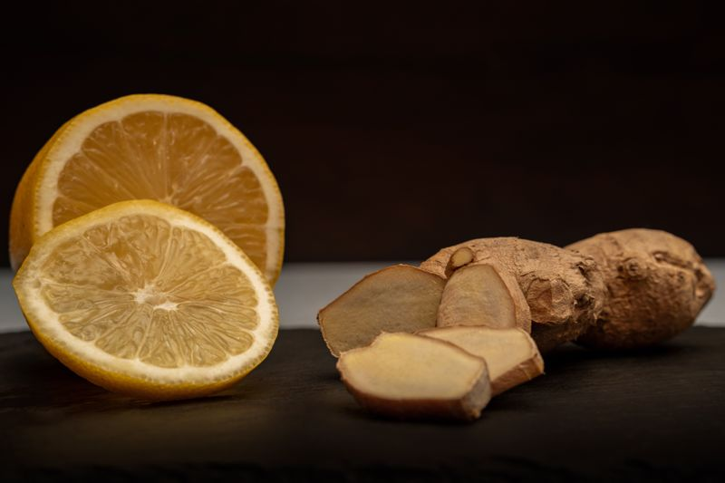
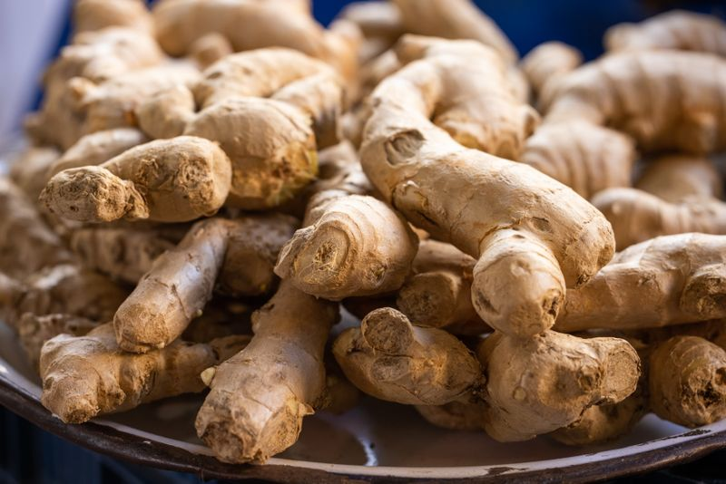

Gingcuci Tea






ORGA_ME Gingcuci Tea is a premium spice product made from dried ginger root that has been carefully granulated for convenience and strong flavor. Each batch is sourced from smallholder growers in Togo and Senegal who harvest the ginger at peak maturity during the late summer months when the root's aromatic compounds are most concentrated. The fresh ginger is peeled, sliced, and dried using traditional sun-drying methods that gently remove moisture while preserving the volatile essential oils and active compounds. After drying, the ginger is coarsely granulated to a texture that is coarser than powder, giving it a satisfying bite that releases ginger's sharp, comforting heat gradually when steeped or cooked. This format is ideal for blending into teas, soups, stews, marinades, and health tonics, offering versatility that powdered ginger cannot match. Each batch undergoes quality testing to ensure consistent flavor, aroma, and potency before being packaged in airtight containers.
Benefits for the Body
Ginger supports digestion, circulation, and immune health. Granulated ginger delivers these benefits in a convenient form that retains essential oils and active compounds. It helps relieve mild nausea, supports healthy digestion, promotes warmth, and supports the body's natural inflammation response. Gingerols and shogaols protect cells from oxidative stress and contribute to improved energy, joint comfort, and mental clarity.
How to Use
Sprinkle a teaspoon of granulated ginger into hot water, tea, soups, smoothies, or baked goods. For a simple ginger tea, boil 8 oz of water, add one teaspoon, simmer for 5-7 minutes, strain, and enjoy with honey or lemon. Use once or twice daily. Store in a cool, dry place.
Ingredients
100% granulated ginger root (Zingiber officinale) — no additives, no preservatives, no artificial flavors.